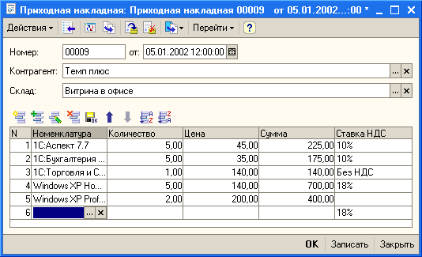

1.2.1.4. Автоматическое заполнение полей при вводе новой строки табличного поляПри добавлении в табличное поле новой строки может возникнуть ситуация, когда необходимо заполнить некоторые поля новой строки значениями по умолчанию. Для этого следует использовать событие ПриНачалеРедактирования() табличного поля. Обработчик данного события вызывается при начале редактирования старой или добавленной строки табличного поля и имеет параметры НоваяСтрока и Копирование. Параметр НоваяСтрока указывает, что происходит редактирование новой строки, а параметр Копирование указывает, что происходит копирование строки.
Поясним использование обработчика данного события на следующем примере. Пусть существует форма документа ПриходнаяНакладная, содержащая табличную часть Состав. Данная табличная часть содержит реквизит СтавкаНДС, являющийся ссылкой на перечисление СтавкиНДС. Требуется при добавлении новой строки устанавливать значение данного реквизита равным 18%.

Для решения данной задачи используем событие ПриНачалеРедактирования() табличного поля. Первым параметром данного события является элемент управления, инициировавший данное событие, т.е. табличное поле. Для обращения к полям новой строки воспользуемся свойством ТекущиеДанные табличного поля. Это свойство содержит коллекцию значений текущей строки табличного поля, соответствующую коллекции колонок отображаемого табличным полем списка. Поэтому значение НДС по умолчанию необходимо присвоить элементу с именем СтавкаНДС данной коллекции. При этом необходимо учитывать, что значение ставки НДС необходимо устанавливать только в случае добавления новой строки, а не копирования или редактирования старой строки, для чего в обработчике события анализируются значения параметров НоваяСтрока и Копирование.
|